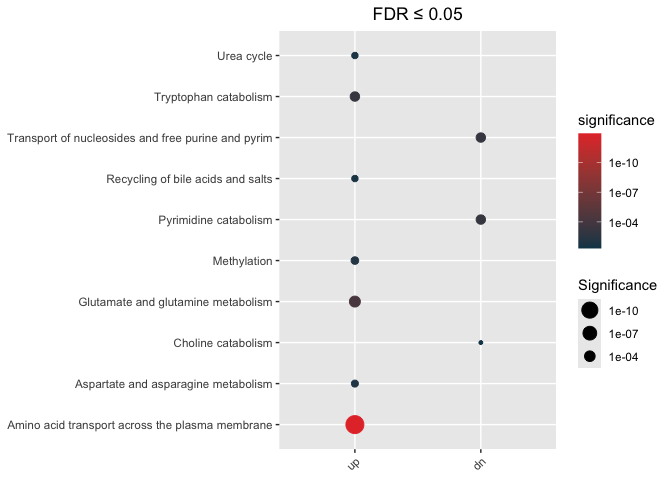
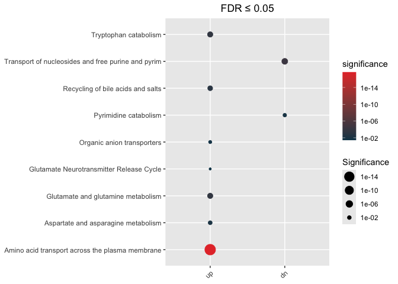

hypeR.GEM maps metabolite signatures to enzyme-coding genes using genome-scale metabolic models (GEMs), then performs gene set enrichment analysis in the mapped gene space. The package is designed for metabolomics studies where the goal is to infer reaction-based links between metabolites and enzyme-coding genes, enabling the mapping of metabolite signatures to gene signatures and their subsequent annotation via gene set enrichment analysis.
What the package does
- Maps RefMet-annotated metabolites to enzyme-coding genes through GEMs
- Supports non-directional and directional reaction-based mapping
- Quantifies gene-level specificity to reduce the impact of promiscuous genes
- Performs unweighted or weighted hypergeometric enrichment analysis
- Provides plotting and export utilities for downstream interpretation
Installation
Install the development version from GitHub:
library(devtools)
devtools::install_github("montilab/hypeR-GEM")Then load the package:
Quick start
This example uses metabolite signatures from human urine samples in COVID-19. By the end of this example, you will map metabolites to enzyme-coding genes and identify enriched biological pathways from the mapped gene signatures.
1. Load example data
COVID_urine is a named list with two signatures:
-
up: up-regulated metabolites -
dn: down-regulated metabolites
Each signature is a data frame containing a RefMet annotation column named refmet_name.
2. Check the expected input format
signature2gene() expects a named list of data frames. Each data frame should contain a column matching reference_key such as refmet_name.
head(COVID_urine$up)
metabolite refmet_name estimate
1 (S)-a-amino-omega-caprolactam L-2-aminohexano-6-lactam 0.29434017200000001
2 1,5-anhydroglucitol (1,5-AG) 1,5-Anhydrosorbitol 2.5732795230000001
3 1-methyladenine 1-Methyladenine 0.71437854700000003
4 1-methylguanine 1-Methylguanine 1.168429911
5 1-methylhypoxanthine 1-Methylhypoxanthine 1.0074942360000001
6 2'-deoxyguanosine Deoxyguanosine 3.0809551019999999
P_value_adjust gene_type
1 7.266576e-03 up
2 1.930000e-11 up
3 3.140546e-02 up
4 1.292721e-02 up
5 2.660084e-02 up
6 1.960000e-08 up3. Map metabolites to genes with signature2gene()
The main function in the package is signature2gene().
Key arguments:
-
signatures: named list of metabolic signatures -
species: built-in GEM species ("Human","Mouse","Rat","Zebrafish","Worm", or"Other") -
directional: ifTRUE, only reactions producing the metabolite are used; ifFALSE, both reactant and product relationships are used -
promiscuous_threshold: filters metabolites associated with many genes -
reference_key: metabolite annotation column used for matching to the GEM -
background: background size used in the gene-specific hypergeometric test; by default, this is set to the total number of metabolites represented in the GEM
## Non-directional mapping
hypeR_GEM_obj <- hypeR.GEM::signature2gene(signatures = COVID_urine,
directional = FALSE,
promiscuous_threshold = 500,
reference_key = 'refmet_name',
background = NULL)
## Directional mapping
hypeR_GEM_obj_di <- hypeR.GEM::signature2gene(signatures = COVID_urine,
directional = TRUE,
promiscuous_threshold = 500,
reference_key = 'refmet_name',
background = NULL)The returned object contains:
-
promiscuous_met: metabolites filtered as overly connected -
mapped_metabolite_signatures: metabolites matched in the GEM -
gene_tables: ranked enzyme-coding genes for each mapeed enzyme-coding signature
names(hypeR_GEM_obj)
[1] "promiscuous_met" "mapped_metabolite_signatures"
[3] "gene_tables"
head(hypeR_GEM_obj$mapped_metabolite_signatures$up)
name fullname refmet_name gene_association
1 MAM00654 2-hydroxyphenylacetate 2-Hydroxyphenylacetic acid 2
2 MAM00664 2-methylbutyrylglycine 2-Methylbutyrylglycine 4
3 MAM00672 2-oxoglutaramate 2-Keto-glutaramic acid 4
4 MAM00775 3-hydroxyanthranilate 3-Hydroxyanthranilic acid 3
5 MAM00788 3-hydroxy-L-kynurenine Hydroxykynurenine 7
6 MAM00952 4-acetamidobutanoate 4-Acetamidobutanoic acid 6
formula exact_mass super_class main_class
1 C8H8O3 152.0473 Organic acids Phenylpropanoids
2 C7H13NO3 159.0895 Organic acids Amino acids and peptides
3 C5H7NO4 145.0375 Organic acids Keto acids
4 C7H7NO3 153.0426 Benzenoids Benzenes
5 C10H12N2O4 224.0797 Organic acids Amino acids and peptides
6 C6H11NO3 145.0739 Organic acids Amino acids and peptides
sub_class
1 Cinnamic acids
2 Amino acids
3 Short-chain keto acids
4 Hydroxybenzoic acids
5 Amino acids
6 Amino acids
head(hypeR_GEM_obj$gene_tables$up)
name symbol associated_reactions total_association
1 ENSG00000158104 HPD 2 6
2 ENSG00000155380 SLC16A1 80 20
3 ENSG00000149124 GLYAT 11 23
4 ENSG00000156689 GLYATL2 5 13
5 ENSG00000166840 GLYATL1 5 13
6 ENSG00000165970 SLC6A5 5 6
signature_association signature_size background p_value fdr
1 1 51 4112 0.0021917226 0.0045978653
2 1 51 4112 0.0248516626 0.0264962579
3 3 51 4112 0.0001562584 0.0009573578
4 2 51 4112 0.0004710983 0.0023025593
5 2 51 4112 0.0004710983 0.0023025593
6 1 51 4112 0.0021917226 0.0045978653
one_minus_p_value one_minus_fdr
1 0.9978083 0.9954021
2 0.9751483 0.9735037
3 0.9998437 0.9990426
4 0.9995289 0.9976974
5 0.9995289 0.9976974
6 0.9978083 0.9954021
associated_metabolites
1 2-Hydroxyphenylacetic acid
2 2-Hydroxyphenylacetic acid
3 2-Methylbutyrylglycine;Isobutyrylglycine;Suberylglycine
4 2-Methylbutyrylglycine;Isobutyrylglycine
5 2-Methylbutyrylglycine;Isobutyrylglycine
6 2-Methylbutyrylglycine4. Run gene set enrichment analysis
Here we use the REACTOME gene sets as an example. The background used in this analysis is set to all enzyme-coding genes in the Human GEM model (for more details, see here).
data(reactome)4.1 Unweighted (standard) hypergeometric test
## Enrichment analysis from non-directional mapping
enrichment_obj <- hypeR.GEM::enrichment(hypeR_GEM_obj,
genesets = reactome,
genesets_name = "REACTOME",
method='unweighted',
min_metabolite = 2,
background=3068)
## Enrichment analysis from directional mapping
enrichment_obj_di <- hypeR.GEM::enrichment(hypeR_GEM_obj_di,
genesets = reactome,
genesets_name = "REACTOME",
method='unweighted',
min_metabolite = 2,
background=3068)The enrichment result is a list with one element per input signature. Each element contains:
-
info: metadata about the test -
data: pathway-level enrichment results
## Taking the enrichment object from non-directional mapping as an example
names(enrichment_obj)
[1] "up" "dn"
head(enrichment_obj$up$data)
label
Amino acid transport across the plasma membrane Amino acid transport across the plasma membrane
Glutamate and glutamine metabolism Glutamate and glutamine metabolism
Tryptophan catabolism Tryptophan catabolism
Methylation Methylation
Aspartate and asparagine metabolism Aspartate and asparagine metabolism
Urea cycle Urea cycle
pval fdr signature
Amino acid transport across the plasma membrane 7.4e-17 1.2e-13 435
Glutamate and glutamine metabolism 1.0e-07 5.3e-05 435
Tryptophan catabolism 1.8e-06 6.9e-04 435
Methylation 2.2e-05 6.9e-03 435
Aspartate and asparagine metabolism 4.5e-05 1.2e-02 435
Urea cycle 9.0e-05 1.9e-02 435
geneset overlap background
Amino acid transport across the plasma membrane 33 26 3068
Glutamate and glutamine metabolism 14 11 3068
Tryptophan catabolism 14 10 3068
Methylation 14 9 3068
Aspartate and asparagine metabolism 12 8 3068
Urea cycle 10 7 3068
gene_hits
Amino acid transport across the plasma membrane SLC16A10;SLC1A4;SLC36A1;SLC36A2;SLC36A4;SLC38A1;SLC38A2;SLC38A4;SLC3A1;SLC3A2;SLC43A1;SLC43A2;SLC6A14;SLC6A15;SLC6A18;SLC6A19;SLC6A20;SLC7A1;SLC7A11;SLC7A2;SLC7A3;SLC7A5;SLC7A6;SLC7A7;SLC7A8;SLC7A9
Glutamate and glutamine metabolism ALDH18A1;GLS;GLS2;GLUD1;GLUD2;GLUL;GOT2;KYAT1;OAT;PYCR1;PYCR2
Tryptophan catabolism AADAT;AFMID;HAAO;KMO;KYAT1;KYAT3;KYNU;SLC36A4;SLC3A2;SLC7A5
Methylation AS3MT;COMT;MAT1A;MAT2A;MAT2B;MTRR;N6AMT1;NNMT;TPMT
Aspartate and asparagine metabolism ASNS;ASPA;ASPG;GOT1;GOT2;NAT8L;SLC25A12;SLC25A13
Urea cycle ARG1;ARG2;ASS1;NAGS;OTC;SLC25A15;SLC25A2
metabolite_hits
Amino acid transport across the plasma membrane Hydroxykynurenine;Ornithine;Phenylalanine;Proline;Aspartic acid;Glutamic acid;Cystine;Glycocholic acid;Kynurenine
Glutamate and glutamine metabolism 2-Keto-glutaramic acid;Hydroxykynurenine;Kynurenic acid;Glutamic acid;Kynurenine;Aspartic acid;Phenylalanine;Ornithine;Proline
Tryptophan catabolism 2-Keto-glutaramic acid;Hydroxykynurenine;Kynurenic acid;Glutamic acid;Kynurenine;3-Hydroxyanthranilic acid;Ornithine;Phenylalanine;Proline;Cystine
Methylation Homovanillic acid;S-Adenosylmethionine
Aspartate and asparagine metabolism Aspartic acid;Glutamic acid;Phenylalanine
Urea cycle Aspartic acid;Glutamic acid;N-Acetylmethionine;Ornithine
num_met_hits ratio_met_hits
Amino acid transport across the plasma membrane 9 0.176
Glutamate and glutamine metabolism 9 0.176
Tryptophan catabolism 10 0.196
Methylation 2 0.039
Aspartate and asparagine metabolism 3 0.059
Urea cycle 4 0.0784.2 Weighted hypergeometric test
hypeR.GEM also supports weighted enrichment, in which gene-specificity scores are used to weight genes before testing for pathway enrichment. For a more detailed explanation of the weighting scheme and workflow, see vignette("Workflow", package = "hypeR.GEM").
enrichment_obj_wt <- hypeR.GEM::enrichment(hypeR_GEM_obj,
genesets = reactome,
genesets_name = "REACTOME",
method='weighted',
weighted_by = 'fdr',
sigmoid_transformation = TRUE,
min_metabolite = 2,
background=3068)5. Visualize the results
max_fdr <- 0.055.1 Non-directional
hypeR.GEM::enrichment_plot(enrichment_obj,
top=40,
abrv=50,
size_by="significance",
fdr_cutoff= max_fdr,
val='fdr') +
ggplot2::ggtitle(paste("FDR ≤", max_fdr))
5.2 Directional
hypeR.GEM::enrichment_plot(enrichment_obj_di,
top=40,
abrv=50,
size_by="significance",
fdr_cutoff= max_fdr,
val='fdr')+
ggplot2::ggtitle(paste("FDR ≤", max_fdr))